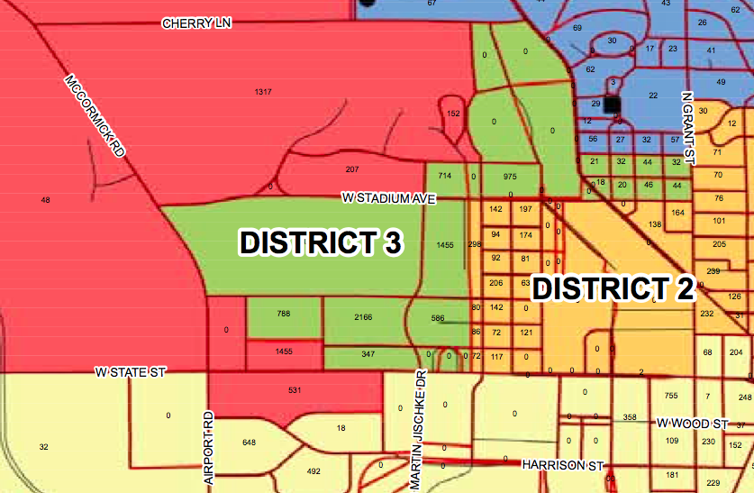

How to Vote
A step by step guide on voting
Are you within the district?
A map of the districts is shown below. I am contesting the Third District. While I appreciate the support of all well-wishers, those outside the district will be unable to vote for me.
The following residence halls are within the third district:
- Cary Halls
- Earhart
- First Street
- Hillenbrand
- Meredith
- Owen
- Shreve
- Tarkington
- Third Street
- Wiley
- Windsor
Can I vote?
- Over 18 years of age
- A Citizen of the United States
- Not Currently in Prison
- A Current Resident of the District and have lived here for at least 30 days continuously
Are you an Indiana Resident?
Great! This makes it super easy to register to vote. You simply need to do the following:
- Go to www.indianavoters.com and "Submit a Voter Registration Application Online"
- Follow the registration instructions
- You must have a valid Indiana Driver's license
- Be sure to change your address to reflect your current residence hall address
- Alternatively, you can follow the Out of State procedure to register via mail
Are you from Out of State?
Great, so am I! Just because you aren't originally from Indiana doesn't mean that you can't exercise your right to vote in your adopted homeland. The procedure to register is as follows:
- Simply fill out the VRG-7 voter registration form which can be found here: forms.in.gov/download.aspx?id=9341
- Some clarifications:
- Box 1: If this is your first time registering in Indiana, check this box
- Box 2: District 3 is located within Tippecanoe County.
- Box 4: List the address of your Residence Hall as your current address.
- Box 6: There is no need to fill this box for a new application
- Box 12: Use the last four digits of your Social Security Number
- Box 13: There is no need to fill this box for a new application.
You can find all the addresses you need along the left side of the page.
Tippecanoe County Board of Elections
20 North 3rd Street
P.O Box 619
Lafayette, IN 47902
Residence Hall Addresses
- Cary Quadrangle #(room number)
1016 West Stadium Avenue
West Lafayette, IN 47906 - Earhart Hall #(room number)
1275 First Street
West Lafayette, IN 47906 - First Street Towers #(room number)
1250 First Street
West Lafayette, IN 47906 - Hillenbrand Hall #(room number)
1301 Third Street
West Lafayette, IN 47906 - Meredith Hall #(room number)
201 Martin Jischke Drive
West Lafayette, IN 47906 - Owen Hall #(room number)
1160 West Stadium Avenue
West Lafayette, IN 47906 - Shreve Hall #(room number)
1275 Third Street
West Lafayette, IN 47906 - Tarkington Hall #(room number)
1165 West Stadium Avenue
West Lafayette, IN 47906 - Third Street Suites #(room number)
1196 Third Street
West Lafayette, IN 47906 - Wiley Hall #(room number)
500 Martin Jischke Drive
West Lafayette, IN 47906 - Windsor Halls
205 North Russell Street
West Lafayette, IN 47906